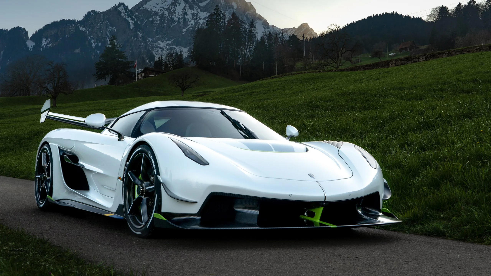

Koenigsegg Jesko Absolut
O Koenigsegg Jesko Absolut é o hipercarro mais rápido já produzido pela marca sueca, com foco absoluto em atingir as maiores velocidades possíveis em linha reta. Seu motor V8 biturbo e design aerodinâmico o colocam em outro patamar de engenharia automotiva.
R$ 18.000.000
Adquirir Agora
Koenigsegg Jesko Absolut - Especificações Técnicas
Motorização e Desempenho
- Motor: 5.0L V8 biturbo de alumínio
- Potência: Até 1.622 cv com E85
- Torque: 1500 Nm
- Velocidade máxima estimada: +530 km/h
- Aceleração 0-100 km/h: ~2,5 s
Transmissão e Tração
- Câmbio: Koenigsegg Light Speed Transmission (LST) de 9 marchas
- Tração: Traseira (RWD)
- Diferencial eletrônico inteligente
Chassi e Suspensão
- Estrutura: Monocoque em fibra de carbono
- Peso seco: ~1.320 kg
- Distribuição de peso otimizada
- Suspensão ativa Triplex dianteira e traseira
Freios e Rodas
- Freios: Carbono-cerâmica de alta performance
- Discos: 410 mm (dianteira), 395 mm (traseira)
- Rodas: Carbono forjado
- Pneus: Michelin Pilot Sport Cup 2 R
Aerodinâmica e Eletrônica
- Aerodinâmica otimizada para baixa resistência
- Sem aerofólio traseiro fixo (diferente do Jesko Track)
- Sistema de controle eletrônico adaptativo
- Modos de condução ajustáveis
Dimensões
- Comprimento: 4.610 mm
- Largura: 2.030 mm
- Altura: 1.210 mm
- Entre-eixos: 2.700 mm
- Tanque: 72 litros